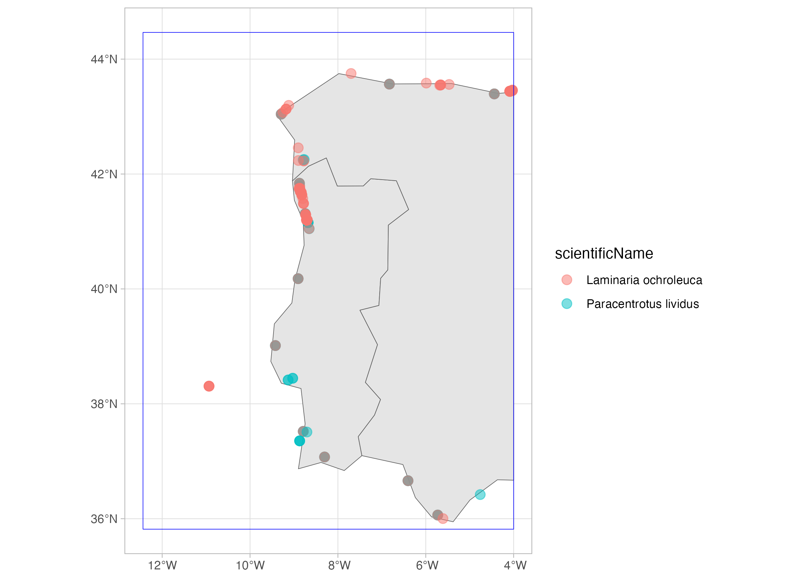
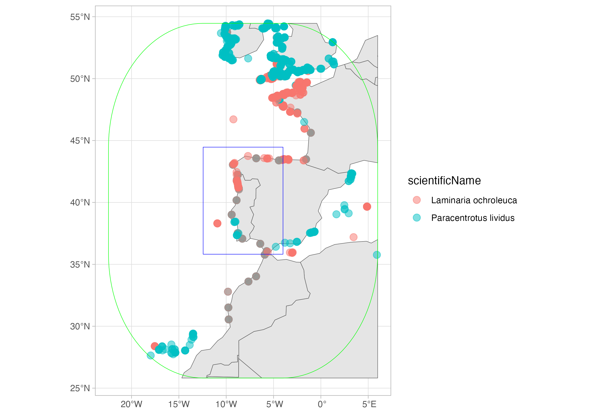
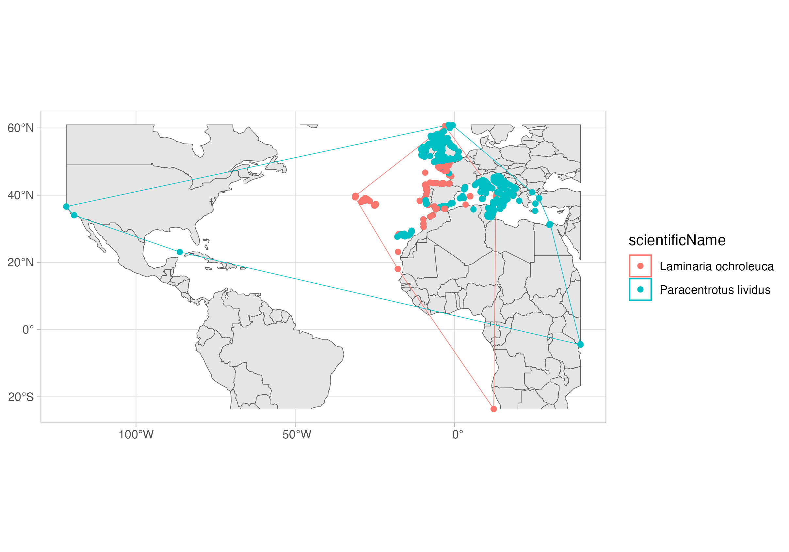

Using DuckDB to query the OBIS occurrence dataset - Part 2 (spatial extension)
Spatial extension of DuckDB
In a previous tutorial we learned about DuckDB and how it can be used to query Parquet datasets from OBIS. As we shared, the new occurrence dataset is a GeoParquet dataset, meaning that it add spatial functionalities to the standard Parquet format. DuckDB has a powerful spatial extension, which we will present in this tutorial. Of course, we will just give you a glimpse of what you can do with this extension, and you should invest a few minutes to explore the full documentation.
Again, we will work with a local copy of the occurrence dataset, which you can download from here: https://obis.org/data/access/. You can also explore together through the Jupyter Notebook (download it locally or open it through Google Colab by clicking here).
We will get all records for the sea-urchin Paracentrotus lividus and the macroalgae Laminaria ochroleuca on a region in the coast of Portugal and Spain. We will use a WKT (Well-Known Text) representation of a polygon:
POLYGON ((-12.436523 35.817813, -3.999023 35.817813, -3.999023 44.465151, -12.436523 44.465151, -12.436523 35.817813))
You can check it on this nice website: https://wktmap.com/
suppressPackageStartupMessages(library(dplyr)) # For some analysis
suppressPackageStartupMessages(library(duckdb)) # Our main package
suppressPackageStartupMessages(library(glue)) # To easily make the queries text
suppressPackageStartupMessages(library(sf)) # To later work with the spatial results
suppressPackageStartupMessages(library(ggplot2)) # For plotting
# To work with DuckDB, we need to start by oppening a
# connection to an in-memory database, using the DBI package
con <- dbConnect(duckdb())
# Install the httpfs extension
dbSendQuery(con, "install spatial; load spatial;")
# Put here the path to your downloaded occurrence dataset
full_export <- "/Volumes/OBIS2/data/obis_data"
# Region:
my_wkt <- "POLYGON ((-12.436523 35.817813, -3.999023 35.817813, -3.999023 44.465151, -12.436523 44.465151, -12.436523 35.817813))"
species_id <- c(124316, 145728)
# DuckDB query
species_records <- dbGetQuery(con, glue(
"
SELECT interpreted.aphiaid AS AphiaID, interpreted.scientificName, interpreted.date_year, interpreted.occurrenceID, ST_AsText(geometry) AS geometry
FROM read_parquet('{full_export}/*.parquet')
WHERE
AphiaID IN ({paste(species_id, collapse = ', ')}) AND
-- ST_Intersects and ST_geometry are functions from the spatial extension
ST_Intersects (geometry, ST_GeomFromText('{my_wkt}'));
"
))And this is the resulting table:
head(species_records, 3) AphiaID scientificName date_year
1 145728 Laminaria ochroleuca 2018
2 145728 Laminaria ochroleuca 1992
3 145728 Laminaria ochroleuca 1992
occurrenceID
1 ARMS_Vigo_TorallaA_20180607_20180924_SF40_ETOH_r1:ASV_758:0083628b0f91a654091f79a82b51df876aee08bc
2 IHCantabria_Preop_112
3 IHCantabria_Preop_133
geometry
1 POINT (-8.7787 42.2284)
2 POINT (-5.681897 43.545396)
3 POINT (-5.662574 43.549548)As you see, it contains a column geometry which is now converted to a WKT representation of the geometry. We can read it on R by using the sf package. Then we will plot it using ggplot2
sp_records_sf <- st_as_sf(species_records, wkt = "geometry", crs = "EPSG:4326")
# To add some context...
selected_area <- st_as_sf(st_as_sfc(my_wkt, crs = 4326))
world <- rnaturalearth::ne_countries(returnclass = "sf")
sf_use_s2(FALSE)Spherical geometry (s2) switched offworld <- suppressMessages(suppressWarnings(st_crop(world, selected_area)))
ggplot() +
geom_sf(data = world, fill = "grey90") +
geom_sf(data = sp_records_sf, aes(color = scientificName), alpha = .5, size = 3) +
geom_sf(data = selected_area, color = "blue", fill = NA) +
theme_light()
Now, let’s consider a buffer around the selected area:
# DuckDB query
species_records_buff <- dbGetQuery(con, glue(
"
SELECT interpreted.aphiaid AS AphiaID, interpreted.scientificName, interpreted.date_year, interpreted.occurrenceID, ST_AsText(geometry) AS geometry
FROM read_parquet('{full_export}/*.parquet')
WHERE
AphiaID IN ({paste(species_id, collapse = ', ')}) AND
-- ST_Intersects and ST_geometry are functions from the spatial extension
ST_Intersects (geometry, ST_Buffer(ST_GeomFromText('{my_wkt}'), 10));
-- The distance of the buffer is expressed in degrees, that is, on the same unit of the CRS of the polygon
"
))And this is the resulting table:
head(species_records_buff, 3) AphiaID scientificName date_year
1 145728 Laminaria ochroleuca 2018
2 145728 Laminaria ochroleuca 1951
3 145728 Laminaria ochroleuca 1948
occurrenceID
1 ARMS_Vigo_TorallaA_20180607_20180924_SF40_ETOH_r1:ASV_758:0083628b0f91a654091f79a82b51df876aee08bc
2 DASSH_NATENG000001_SE01_145728
3 DASSH_NATENG000001_SE02_145728
geometry
1 POINT (-8.7787 42.2284)
2 POINT (-4.1358912 50.362985)
3 POINT (-4.4464779 50.337661)sp_records_buff_sf <- st_as_sf(species_records_buff, wkt = "geometry", crs = "EPSG:4326")
selected_area_buff <- suppressMessages(suppressWarnings(st_buffer(selected_area, dist = 10)))
world <- rnaturalearth::ne_countries(returnclass = "sf")
world <- suppressMessages(suppressWarnings(st_crop(world, selected_area_buff)))
ggplot() +
geom_sf(data = world, fill = "grey90") +
geom_sf(data = sp_records_buff_sf, aes(color = scientificName), alpha = .5, size = 3) +
geom_sf(data = selected_area, color = "blue", fill = NA) +
geom_sf(data = selected_area_buff, color = "green", fill = NA) +
theme_light()
Finally, let’s get the convex hull over all records of each species. I will also retrieve all records, so I can plot together. Now that I’m doing my last query, I will also close the connection.
# DuckDB query
species_records_hull <- dbGetQuery(con, glue(
"
SELECT
interpreted.aphiaid AS AphiaID,
interpreted.scientificName AS scientificName,
ST_AsText(ST_ConvexHull(ST_Union_Agg(geometry))) AS convex_hull
FROM read_parquet('{full_export}/*.parquet')
WHERE
AphiaID IN ({paste(species_id, collapse = ', ')})
GROUP BY AphiaID, scientificName
"
))
species_records_all <- dbGetQuery(con, glue(
"
SELECT
interpreted.aphiaid AS AphiaID,
interpreted.scientificName AS scientificName,
ST_AsText(geometry) AS geometry
FROM read_parquet('{full_export}/*.parquet')
WHERE
AphiaID IN ({paste(species_id, collapse = ', ')})
"
))
dbDisconnect(con)sp_hull <- st_as_sf(species_records_hull, wkt = "convex_hull", crs = "EPSG:4326")
species_records_all <- st_as_sf(species_records_all, wkt = "geometry", crs = "EPSG:4326")
world <- rnaturalearth::ne_countries(returnclass = "sf")
world <- suppressMessages(suppressWarnings(st_crop(world, sp_hull)))
ggplot() +
geom_sf(data = world, fill = "grey90") +
geom_sf(data = sp_hull, aes(color = scientificName), fill = NA) +
geom_sf(data = species_records_all, aes(color = scientificName), fill = NA) +
theme_light()
That is it, now you can work with the spatial extension of DuckDB! In the next tutorial we will explore the R package duckplyr, a drop-in replacement for DuckDB on R which uses the tidyverse grammar.
Bonus: the DuckDB UI
DuckDB also has a UI extension, which enables you to explore the data using a dashboard-like interface. You can check how it works here.